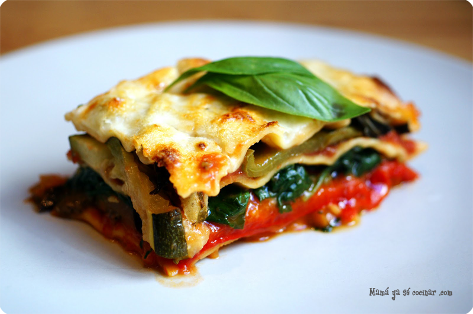

Receta de Arroz con leche
7 de Mayo del 2018

Ingredientes:
- 5 tazas de agua
- 1 raja grande de canela
- 1 pizca de sal
- 1 lata de leche evaporada
- 1½ tazas de azúcar
- 1 taza de arroz
- 1 cdta. de esencia de vainilla
- Canela molida
Preparación:
Poner el agua a hervir en una cacerola con la canela y la sal. Cuando rompa el hervor, agregar el arroz, tapar la olla y dejar hervir a fuego lento hasta que seque. Añadir la leche y el azúcar, moviendo constantemente hasta que tome punto. Agregar la vainilla. Vaciar la dulcera y espolvorear con canela. Para preparar una receta especial, verter el arroz con leche una vez frío en un bol y mezclar con 2 tazas de crema chantilly. Se obtendrá una preparación espesa. Salsa para acompañar: Mezclar 1 taza de dulce de leche con 4 cdas. de vino dulce y llevar al fuego hasta hervir. Servir en copas o platos. Colocar en la base salsa de dulce de leche y encima copos de arroz con leche, espolvoreados con cocoa y canela.
Alonso Cuba: Muy buena receta! Le encanto a mi familia.
Maria Castro: La receta esta muy buena, pero yo le agregue coco.
Julio Aguirre: Gracias por la receta! Seria mejor si pondrian un video tutorial.
Receta de Lasaña de Verduras
5 de mayo del 2018
Ingredientes:
- 8 piezas de jitomate guaje
- 2 tazas de cebolla
- 4 dientes de ajo
- 4 cucharadas de queso parmesano
- 8 cucharaditas de albahaca deshidratada
- 2 tazas de agua
- 8 láminas de lasagna
- 1 taza de brócoli cocido
- 1 taza de espinaca cocida
- 2 1/3 tazas de champiñones cocido
- 3/4 de taza de requesón
- 2/3 de cucharadita de queso parmesano
Preparación:
Para preparar la salsa: Picar en cubos los jitomates y la cebolla para que sea más fácil licuar la mezcla. Licuar los jitomates, el ajo, la cebolla, el queso parmesano, la albahaca deshidratada y las 2 tazas de agua. Vaciar la salsa en un sartén y llevarla a ebullición. Se pueden agregar hojas enteras de albahaca a la salsa mientras se cuece para mejorar su sabor. Para preparar la lasaña: En un molde para horno, colocar una capa de lámina de lasaña. Agregar un poco de brócoli, espinaca y champiñones. Espolvorear un poco de requesón. Añadir una cucharada de salsa de jitomate. Repetir los pasos 5 y 6 hasta que utilices todas las láminas para lasaña. Recuerda terminar con la mezcla de verduras. Hornear por 25 minutos a 180° C. Cuando esté lista añadir 1/2 cucharadita de queso parmesano.
Juan del Aguila: Me encanto! Ahora lo hare todo los domingos!
Alejandra Bullon: Me salio muy rica, aunque casi se me quema por distraida... jajaja!
Julio Aguirre: Muchas gracias por la receta! Me gustaria que pongan la receta de un keke o cheesecake.